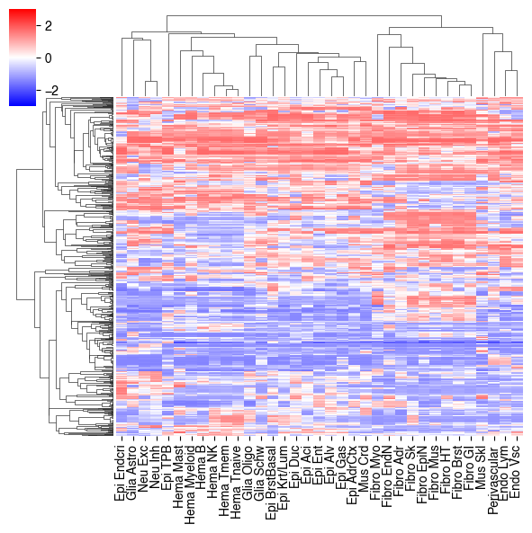
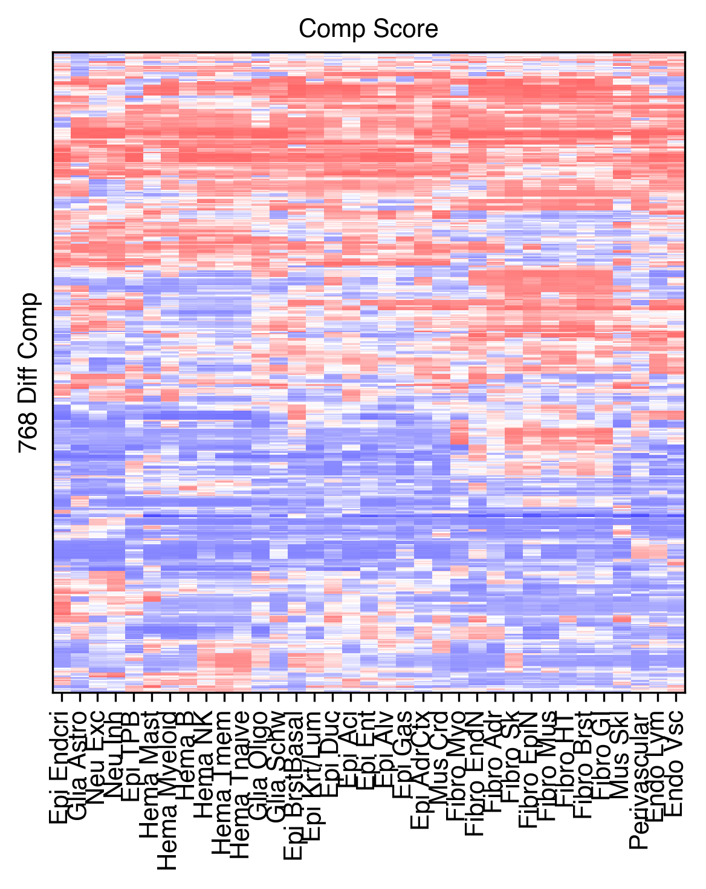
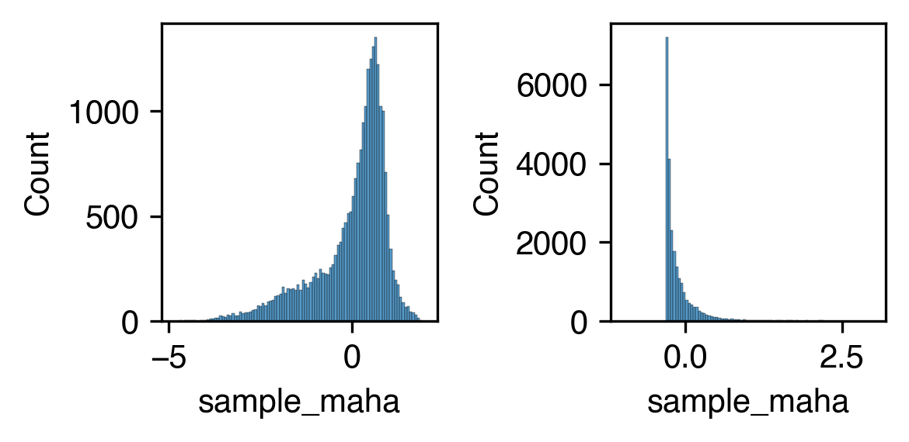
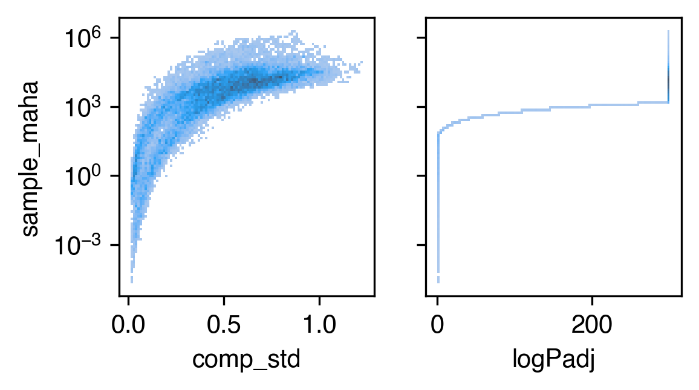
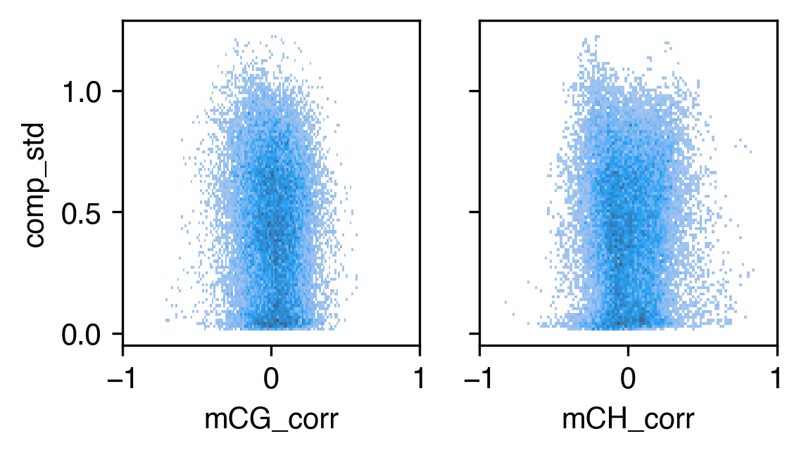
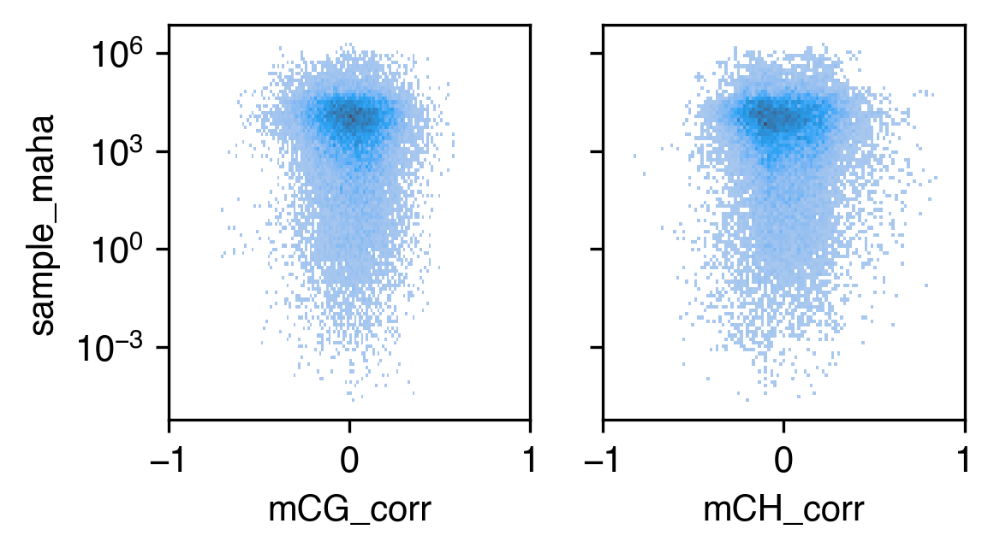

5. Diffcomp majortype#
Part of the Fig. 4 chapter — see it for the panel-by-panel map. The first code cell sets ENTEX_ROOT and activates the no-overwrite guard (see the Reproduction guide). Outputs shown are the author’s original run.
📥 Required input files#
This notebook reads the following files (paths resolve from ENTEX_ROOT/REF_ROOT; the setup cell sets them). See the chapter’s inputs.md for RAW-vs-derived tags.
f'{indir}L1color.tsv'· metadata: colorf'{compdir}L1/comp.impute.hdf'· otherf'{compdir}L1/comp.{mode}.hdf'· otherf'{outdir}DifferentialResult/fdr_result/differential.intra_sample_combined.pcQnm.bedGraph'· otherf'{outdir}bin_stats.hdf'· otherf'{indir}analysis/mCG_distribution/L1_chrom100k_mCG.hdf'· otherf'{indir}analysis/mCH_distribution/L1_chrom100k_mCH.hdf'· other
# === Reproduction setup — edit ENTEX_ROOT / REF_ROOT for your machine ===
import os, sys
ENTEX_ROOT = os.environ.get('ENTEX_ROOT', '/large_storage/zhoulab/zhoujt/project/ENTEx')
REF_ROOT = os.environ.get('REF_ROOT', '/large_storage/zhoulab/ref')
BOOK_ROOT = os.environ.get('BOOK_ROOT', f'{ENTEX_ROOT}/analysis/HumanCellEpigenomeAtlas')
sys.path.insert(0, BOOK_ROOT)
os.chdir(f'{ENTEX_ROOT}/analysis') # original working directory
import repro_guard # no-overwrite guard (default: skip existing)
[repro_guard] active — READ-ONLY (all writes skipped; inline figures still render)
import os
import cooler
import numpy as np
import pandas as pd
import matplotlib as mpl
import matplotlib.pyplot as plt
from matplotlib.colors import LogNorm
from matplotlib import cm as cm
import seaborn as sns
mpl.style.use('default')
mpl.rcParams['pdf.fonttype'] = 42
mpl.rcParams['ps.fonttype'] = 42
mpl.rcParams['font.family'] = 'sans-serif'
mpl.rcParams['font.sans-serif'] = 'Helvetica'
group_name = 'all'
indir = f'{ENTEX_ROOT}/'
compdir = f'{indir}analysis/compartment/'
outdir = f'{indir}analysis/diff_comp/{group_name}/'
L1_meta = pd.read_csv(f'{indir}L1color.tsv', sep='\t', header=0, index_col=0)
L1_meta = L1_meta.drop(['c35', 'c36'], axis=0)
L1_annot = L1_meta['L1_abbr'].to_dict()
L1_color = L1_meta['color'].to_dict()
res = 100000
L1_color.update({L1_annot[k]: L1_color[k] for k in L1_annot if k in L1_color}) # also key by name
comp = pd.read_hdf(f'{compdir}L1/comp.impute.hdf')
comp
| chrom | start | end | raw_binfilter | c6 | c3 | c8 | c20 | c4 | c9 | ... | c5 | c12 | c27 | c21 | c10 | c7 | c15 | c24 | c0 | c1 | |
|---|---|---|---|---|---|---|---|---|---|---|---|---|---|---|---|---|---|---|---|---|---|
| 0 | chr1 | 0 | 100000 | False | 0.0 | 0.0 | 0.0 | 0.0 | 0.0 | 0.0 | ... | 0.0 | 0.0 | 0.0 | 0.0 | 0.0 | 0.0 | 0.0 | 0.0 | 0.0 | 0.0 |
| 1 | chr1 | 100000 | 200000 | False | 0.0 | 0.0 | 0.0 | 0.0 | 0.0 | 0.0 | ... | 0.0 | 0.0 | 0.0 | 0.0 | 0.0 | 0.0 | 0.0 | 0.0 | 0.0 | 0.0 |
| 2 | chr1 | 200000 | 300000 | False | 0.0 | 0.0 | 0.0 | 0.0 | 0.0 | 0.0 | ... | 0.0 | 0.0 | 0.0 | 0.0 | 0.0 | 0.0 | 0.0 | 0.0 | 0.0 | 0.0 |
| 3 | chr1 | 300000 | 400000 | False | 0.0 | 0.0 | 0.0 | 0.0 | 0.0 | 0.0 | ... | 0.0 | 0.0 | 0.0 | 0.0 | 0.0 | 0.0 | 0.0 | 0.0 | 0.0 | 0.0 |
| 4 | chr1 | 400000 | 500000 | False | 0.0 | 0.0 | 0.0 | 0.0 | 0.0 | 0.0 | ... | 0.0 | 0.0 | 0.0 | 0.0 | 0.0 | 0.0 | 0.0 | 0.0 | 0.0 | 0.0 |
| ... | ... | ... | ... | ... | ... | ... | ... | ... | ... | ... | ... | ... | ... | ... | ... | ... | ... | ... | ... | ... | ... |
| 28755 | chr22 | 50400000 | 50500000 | False | 0.0 | 0.0 | 0.0 | 0.0 | 0.0 | 0.0 | ... | 0.0 | 0.0 | 0.0 | 0.0 | 0.0 | 0.0 | 0.0 | 0.0 | 0.0 | 0.0 |
| 28756 | chr22 | 50500000 | 50600000 | False | 0.0 | 0.0 | 0.0 | 0.0 | 0.0 | 0.0 | ... | 0.0 | 0.0 | 0.0 | 0.0 | 0.0 | 0.0 | 0.0 | 0.0 | 0.0 | 0.0 |
| 28757 | chr22 | 50600000 | 50700000 | False | 0.0 | 0.0 | 0.0 | 0.0 | 0.0 | 0.0 | ... | 0.0 | 0.0 | 0.0 | 0.0 | 0.0 | 0.0 | 0.0 | 0.0 | 0.0 | 0.0 |
| 28758 | chr22 | 50700000 | 50800000 | False | 0.0 | 0.0 | 0.0 | 0.0 | 0.0 | 0.0 | ... | 0.0 | 0.0 | 0.0 | 0.0 | 0.0 | 0.0 | 0.0 | 0.0 | 0.0 | 0.0 |
| 28759 | chr22 | 50800000 | 50818468 | False | 0.0 | 0.0 | 0.0 | 0.0 | 0.0 | 0.0 | ... | 0.0 | 0.0 | 0.0 | 0.0 | 0.0 | 0.0 | 0.0 | 0.0 | 0.0 | 0.0 |
28760 rows × 39 columns
mode = 'impute'
comp = pd.read_hdf(f'{compdir}L1/comp.{mode}.hdf', key='data')
comp.index = comp['chrom'].astype(str) + '-' + (comp['start'] // res).astype(str)
comp = comp.loc[comp['raw_binfilter']]
print(comp.shape)
(24478, 39)
binall = pd.DataFrame(index=comp.index)
binall['chrom'] = binall.index.str.split('-').str[0]
binall['start'] = binall.index.str.split('-').str[1].astype(int) * res
binall['end'] = binall['start'] + res
binall
| chrom | start | end | |
|---|---|---|---|
| chr1-19 | chr1 | 1900000 | 2000000 |
| chr1-20 | chr1 | 2000000 | 2100000 |
| chr1-21 | chr1 | 2100000 | 2200000 |
| chr1-28 | chr1 | 2800000 | 2900000 |
| chr1-29 | chr1 | 2900000 | 3000000 |
| ... | ... | ... | ... |
| chr22-499 | chr22 | 49900000 | 50000000 |
| chr22-500 | chr22 | 50000000 | 50100000 |
| chr22-501 | chr22 | 50100000 | 50200000 |
| chr22-502 | chr22 | 50200000 | 50300000 |
| chr22-503 | chr22 | 50300000 | 50400000 |
24478 rows × 3 columns
chrom_size_path = f'{REF_ROOT}/hg38/fasta/hg38.main.chrom.sizes'
chrom_sizes = cooler.read_chromsizes(chrom_size_path, all_names=True)
chrom_sizes = chrom_sizes.iloc[:22]
for xx in L1_meta.index:
os.makedirs(f'{outdir}{xx}_100Kb_pca/intra_pca/{xx}_100Kb_mat/', exist_ok=True)
tmp = binall.copy()
tmp['pc'] = comp[xx]
for c in chrom_sizes.index:
tmp.loc[tmp['chrom']==c].to_csv(f'{outdir}{xx}_100Kb_pca/intra_pca/{xx}_100Kb_mat/{c}.pc.bedGraph', sep='\t', header=False, index=False)
tmp = pd.DataFrame(index=L1_meta.index)
tmp['matrix_path'] = '.'
tmp['bed_path'] = '.'
tmp['sample'] = tmp.index + '_100Kb'
tmp['group'] = tmp.index
tmp.to_csv(f'{outdir}input.txt', sep='\t', header=False, index=False)
comp = pd.read_csv(f'{outdir}DifferentialResult/fdr_result/differential.intra_sample_combined.pcQnm.bedGraph', sep='\t', header=0, index_col=None)
comp.index = comp['chr'] + '_' + (comp['start'] // res).astype(str)
comp
| chr | start | end | c33_100Kb | c3_100Kb | c22_100Kb | c9_100Kb | c20_100Kb | c25_100Kb | c30_100Kb | ... | c26 | c5 | c10 | c16 | c21 | c12 | sample_maha | pval | padj | dist_clust | |
|---|---|---|---|---|---|---|---|---|---|---|---|---|---|---|---|---|---|---|---|---|---|
| chr1_19 | chr1 | 1900000 | 2000000 | 1.50038 | 1.49736 | 1.52027 | 1.49891 | 1.48175 | 1.46884 | 1.46135 | ... | 1.48175 | 1.42890 | 1.43182 | 1.46672 | 1.47424 | 1.48702 | 0.113575 | 1.000000e+00 | 1.000000e+00 | 1 |
| chr1_20 | chr1 | 2000000 | 2100000 | 1.51140 | 1.47234 | 1.50257 | 1.51268 | 1.49106 | 1.49177 | 1.46055 | ... | 1.43866 | 1.32034 | 1.42587 | 1.48495 | 1.43344 | 1.47234 | 2.330744 | 1.000000e+00 | 1.000000e+00 | 1 |
| chr1_21 | chr1 | 2100000 | 2200000 | 1.50591 | 1.48251 | 1.48841 | 1.50414 | 1.49891 | 1.50038 | 1.43629 | ... | 1.44790 | 1.34475 | 1.43149 | 1.49057 | 1.49644 | 1.47640 | 1.324412 | 1.000000e+00 | 1.000000e+00 | 1 |
| chr1_28 | chr1 | 2800000 | 2900000 | 1.08871 | 1.10611 | 1.10611 | 0.80636 | 1.20194 | 0.87901 | 1.26623 | ... | 0.76426 | 0.55477 | 1.41301 | 1.39158 | 1.35039 | 0.66988 | 1063.448956 | 2.391130e-201 | 3.589261e-201 | 1 |
| chr1_29 | chr1 | 2900000 | 3000000 | 1.11019 | 1.10823 | 1.18195 | 0.82589 | 1.27755 | 0.92879 | 1.35686 | ... | 0.85469 | 0.68270 | 1.41102 | 1.40569 | 1.40481 | 0.70998 | 792.510638 | 1.490513e-144 | 2.159118e-144 | 1 |
| ... | ... | ... | ... | ... | ... | ... | ... | ... | ... | ... | ... | ... | ... | ... | ... | ... | ... | ... | ... | ... | ... |
| chr9_1369 | chr9 | 136900000 | 137000000 | 1.47252 | 1.43490 | 1.37531 | 1.46030 | 1.33106 | 1.42084 | 1.30180 | ... | 1.49570 | 1.50316 | 1.41170 | 1.38070 | 1.45482 | 1.50113 | 0.089320 | 1.000000e+00 | 1.000000e+00 | 1 |
| chr9_1370 | chr9 | 137000000 | 137100000 | 1.47449 | 1.45027 | 1.39156 | 1.48431 | 1.38244 | 1.43194 | 1.31692 | ... | 1.51918 | 1.50610 | 1.39156 | 1.36098 | 1.46968 | 1.51490 | 0.374852 | 1.000000e+00 | 1.000000e+00 | 1 |
| chr9_1371 | chr9 | 137100000 | 137200000 | 1.43963 | 1.46818 | 1.40489 | 1.46420 | 1.44661 | 1.45596 | 1.25562 | ... | 1.53675 | 1.47531 | 1.37945 | 1.37142 | 1.47155 | 1.51201 | 4.112428 | 1.000000e+00 | 1.000000e+00 | 1 |
| chr9_1372 | chr9 | 137200000 | 137300000 | 1.46120 | 1.46734 | 1.39504 | 1.44155 | 1.47975 | 1.47449 | 1.25122 | ... | 1.55724 | 1.46217 | 1.42338 | 1.41617 | 1.46030 | 1.51380 | 6.803561 | 9.999999e-01 | 1.000000e+00 | 1 |
| chr9_1376 | chr9 | 137600000 | 137700000 | 1.40155 | 1.50396 | 1.49953 | 1.30708 | 1.49953 | 1.40312 | 1.34952 | ... | 1.45596 | 1.55857 | 1.11903 | 1.21528 | 1.34674 | 1.42453 | 665.821998 | 2.996008e-118 | 4.255573e-118 | 1 |
24478 rows × 77 columns
binall = comp[['chr', 'start', 'end', 'sample_maha', 'pval', 'padj']]
comp = comp[L1_meta.index]
binall.to_hdf(f'{outdir}bin_stats.hdf', key='data')
binall = pd.read_hdf(f'{outdir}bin_stats.hdf', key='data')
mcg = pd.read_hdf(f'{indir}analysis/mCG_distribution/L1_chrom100k_mCG.hdf', key='data').T
mch = pd.read_hdf(f'{indir}analysis/mCH_distribution/L1_chrom100k_mCH.hdf', key='data').T
selb = comp.index.intersection(mcg.index).intersection(mch.index)
print(len(selb))
24478
comp = comp.loc[selb]
mcg = mcg.loc[selb]
mch = mch.loc[selb]
binall = binall.loc[selb]
from scipy.stats import zscore, pearsonr, norm
# selb = (binall['padj']<1e-3)
selb = zscore(binall['sample_maha'])>norm.isf(0.1)
print(selb.sum())
768
tmp3c = comp.loc[selb].values
# tmp3c = zscore(tmp3c, axis=1)
cg = sns.clustermap(tmp3c, cmap='bwr', vmin=-3, vmax=3, metric='cosine', figsize=(6,6),
xticklabels=comp.columns.map(L1_annot), yticklabels=[])

rorder = cg.dendrogram_row.reordered_ind.copy()
corder = cg.dendrogram_col.reordered_ind.copy()
fig, ax = plt.subplots(figsize=(4, 5), dpi=300)
ax.imshow(tmp3c[np.ix_(rorder, corder)], cmap='bwr', aspect='auto', vmin=-3, vmax=3, interpolation='none')
ax.set_title('Comp Score', fontsize=10)
# sns.despine(ax=ax, left=True, bottom=True)
ax.set_xticks(np.arange(comp.shape[1]))
ax.set_xticklabels(comp.columns[corder].map(L1_meta['L1_abbr']), rotation=90)
ax.set_yticks([])
ax.set_ylabel(f'{tmp3c.shape[0]} Diff Comp')
plt.tight_layout()

def compute_pearsonr(data_x, data_y):
x_mean = np.mean(data_x, axis=1)
y_mean = np.mean(data_y, axis=1)
cov = np.sum((data_x - x_mean[:, None]) * (data_y - y_mean[:, None]), axis=1)
stdlabel = np.sqrt(np.sum((data_x - x_mean[:, None]) ** 2, axis=1))
stdpred = np.sqrt(np.sum((data_y - y_mean[:, None]) ** 2, axis=1))
corr = cov / stdlabel / stdpred
print(np.mean(corr))
return corr
binall['mCG_corr'] = compute_pearsonr(comp.values, mcg.values)
binall['mCH_corr'] = compute_pearsonr(comp.values, mch.values)
0.012191405136921468
0.0054554775680507915
binall['logPadj'] = -np.log10(binall['padj'])
binall.loc[binall['logPadj']>300, 'logPadj'] = 300
binall['mCG_std'] = np.std(mcg, axis=1)
binall['mCH_std'] = np.std(mch, axis=1)
binall['comp_std'] = np.std(comp, axis=1)
binall
| chr | start | end | sample_maha | pval | padj | mCG_corr | mCH_corr | logPadj | mCG_std | mCH_std | comp_std | |
|---|---|---|---|---|---|---|---|---|---|---|---|---|
| chr1_19 | chr1 | 1900000 | 2000000 | 0.113575 | 1.000000e+00 | 1.000000e+00 | 0.309247 | 0.377767 | -0.000000 | 0.055201 | 0.009646 | 0.028466 |
| chr1_20 | chr1 | 2000000 | 2100000 | 2.330744 | 1.000000e+00 | 1.000000e+00 | 0.069742 | 0.238222 | -0.000000 | 0.048166 | 0.007169 | 0.041597 |
| chr1_21 | chr1 | 2100000 | 2200000 | 1.324412 | 1.000000e+00 | 1.000000e+00 | 0.120032 | 0.077852 | -0.000000 | 0.054712 | 0.003443 | 0.034441 |
| chr1_28 | chr1 | 2800000 | 2900000 | 1063.448956 | 2.391130e-201 | 3.589261e-201 | -0.012764 | 0.167616 | 200.444995 | 0.123017 | 0.010848 | 0.283836 |
| chr1_29 | chr1 | 2900000 | 3000000 | 792.510638 | 1.490513e-144 | 2.159118e-144 | -0.071177 | 0.179299 | 143.665724 | 0.129803 | 0.012099 | 0.266026 |
| ... | ... | ... | ... | ... | ... | ... | ... | ... | ... | ... | ... | ... |
| chr9_1369 | chr9 | 136900000 | 137000000 | 0.089320 | 1.000000e+00 | 1.000000e+00 | 0.054787 | -0.253586 | -0.000000 | 0.034190 | 0.006216 | 0.069177 |
| chr9_1370 | chr9 | 137000000 | 137100000 | 0.374852 | 1.000000e+00 | 1.000000e+00 | 0.044765 | -0.207306 | -0.000000 | 0.034865 | 0.005395 | 0.077893 |
| chr9_1371 | chr9 | 137100000 | 137200000 | 4.112428 | 1.000000e+00 | 1.000000e+00 | -0.020589 | -0.193968 | -0.000000 | 0.042190 | 0.002387 | 0.098444 |
| chr9_1372 | chr9 | 137200000 | 137300000 | 6.803561 | 9.999999e-01 | 1.000000e+00 | -0.006165 | -0.171149 | -0.000000 | 0.049978 | 0.004447 | 0.103546 |
| chr9_1376 | chr9 | 137600000 | 137700000 | 665.821998 | 2.996008e-118 | 4.255573e-118 | -0.005210 | 0.099970 | 117.371042 | 0.032057 | 0.005158 | 0.235895 |
24478 rows × 12 columns
binall.to_hdf(f'{outdir}bin_stats.hdf', key='data')
fig, axes = plt.subplots(1, 2, figsize=(4, 2), dpi=300)
ax = axes[0]
sns.histplot(zscore(np.log10(binall['sample_maha'])), bins=100, ax=ax)
ax = axes[1]
sns.histplot(zscore(binall['sample_maha']), bins=100, binrange=(-1,3), ax=ax)
plt.tight_layout()

print(np.sum(zscore(binall['sample_maha'])>norm.isf(0.1)))
768
fig, axes = plt.subplots(1, 2, figsize=(4,2), sharey='all', dpi=300)
ax = axes[0]
sns.histplot(binall, x='comp_std', y='sample_maha', bins=100, ax=ax, log_scale=(False, 10))
ax = axes[1]
sns.histplot(binall, x='logPadj', y='sample_maha', bins=100, ax=ax, log_scale=(False, 10))
<Axes: xlabel='logPadj', ylabel='sample_maha'>

fig, axes = plt.subplots(1, 2, figsize=(4,2), sharex='all', sharey='all', dpi=300)
ax = axes[0]
sns.histplot(binall, x='mCG_corr', y='comp_std', bins=100, ax=ax)
ax = axes[1]
sns.histplot(binall, x='mCH_corr', y='comp_std', bins=100, ax=ax)
ax.set_xticks([-1, 0, 1])
# plt.savefig(f'majortype_{group_name}_diffcomp_stdcorr.pdf', transparent=True)
[<matplotlib.axis.XTick at 0x7fcfa4e88070>,
<matplotlib.axis.XTick at 0x7fcfa4efe740>,
<matplotlib.axis.XTick at 0x7fcfa4effcd0>]

fig, axes = plt.subplots(1, 2, figsize=(4,2), sharex='all', sharey='all', dpi=300)
ax = axes[0]
sns.histplot(binall, x='mCG_corr', y='sample_maha', bins=100, log_scale=(False, 10), ax=ax)
ax = axes[1]
sns.histplot(binall, x='mCH_corr', y='sample_maha', bins=100, log_scale=(False, 10), ax=ax)
ax.set_xticks([-1, 0, 1])
# plt.savefig(f'majortype_{group_name}_diffcomp_statscorr.pdf', transparent=True)
[<matplotlib.axis.XTick at 0x7fcfa4f3e440>,
<matplotlib.axis.XTick at 0x7fcfa4da0d60>,
<matplotlib.axis.XTick at 0x7fcfa4da2e00>]
